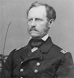

|

|

|
|
|
Union naval officer John Adolphus Bernard Dahlgren is best known for
his research in naval tactics, his innovation in naval
weaponry and, during the Civil War, his successful
prosecution of the blockade against Confederate ports.
Born in Philadelphia, Dahlgren became a sailor, joining
the Navy as a midshipman in 1826. In 1834, his mastery of
mathematics and survey technique won him a position in the
U.S. Coastal Survey. During the 1840s, Dahlgren took an
interest in naval weaponry, urging that the Navy test,
design, and manufacture its own weapons. Dahlgren, now a
lieutenant, got his chance in 1847 when the Navy made him
chief of the Bureau of Ordnance.
Dahlgren tested his weapons designs extensively at his
Navy Yard workshop and foundry. For instance, he bored
holes in the metal walls of cannon, inserting gauges to
measure air pressure as weapons were fired. Dahlgren then
redesigned the cannon, thickening the walls where the
internal pressure was greatest. This gave the "Dahlgren
gun" a distinctive shape (gunners also called it the
"soda-water bottle"), but made the weapon particularly
reliable. By the Civil War, most naval vessels carried
Dahlgren's guns, including Union ironclads armed with
Dahlgren's 15-inch smoothbores.
In 1861, Lincoln promoted Dahlgren to captain after all
but three of the Navy Yard's officers resigned their
commissions to join the Confederacy. In charge of the
Washington Navy Yard in the war's first two years, Dahlgren
took command of the South Atlantic Blockading Squadron
shortly after his 1863 promotion to Rear Admiral. Under his
leadership, the squadron successfully blockaded Charleston
Harbor, which assisted Sherman's capture of Savannah,
Georgia.
With the end of the Civil War, Dahlgren was given command
of the South Pacific Squadron. He returned to the Navy Yard
in 1868 and died in 1870.
Source: Joan Waugh, ed., Facts on File Encyclopedia of American
History: Civil War and Reconstruction, 1856 to 1869 (New York: Facts on
File, 2003), 87.
|